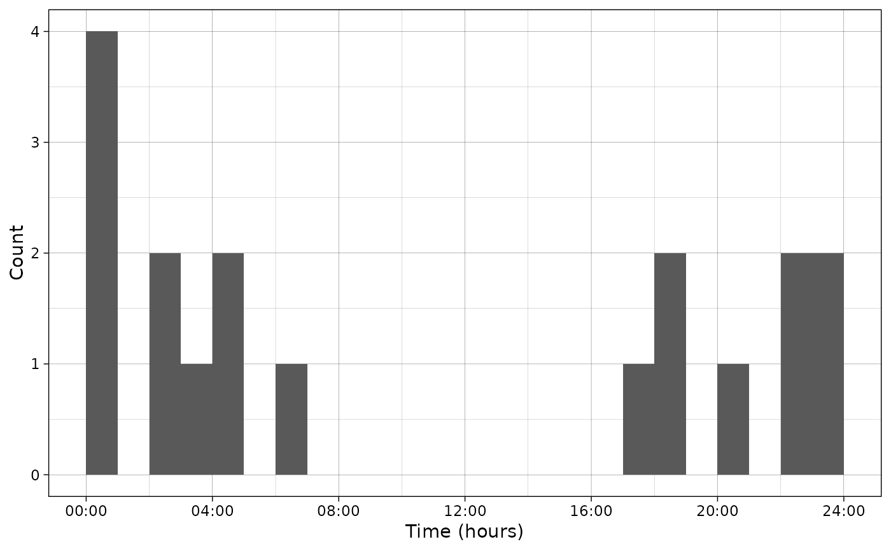
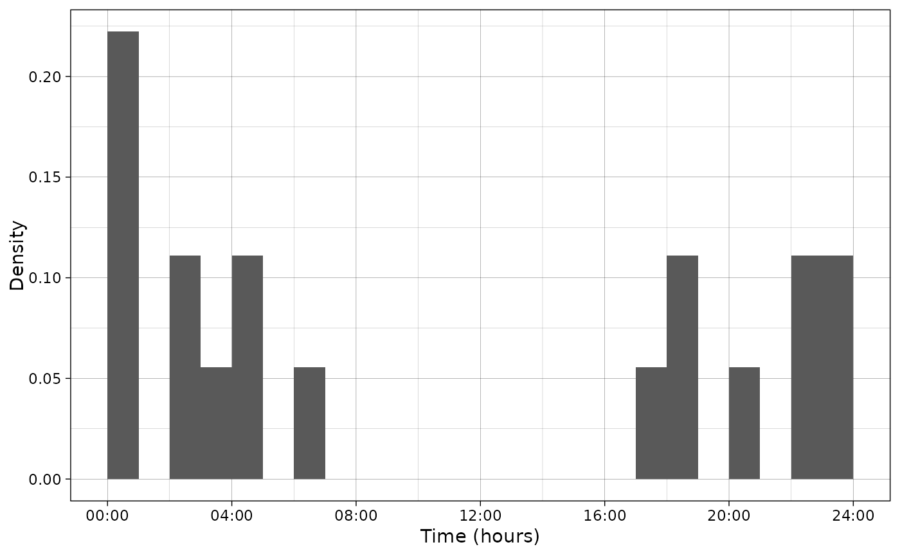
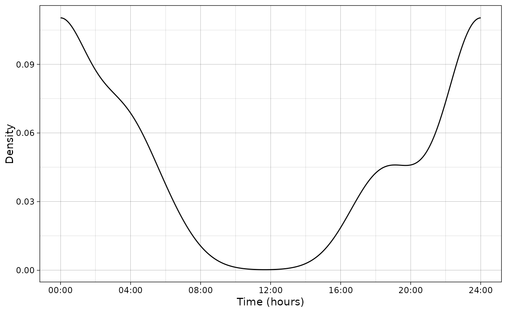

Plot activity data
Usage
plot_activity(
dfrec = NULL,
time_dfrec = NULL,
dffit = NULL,
time_dffit = NULL,
y_fit = NULL,
n = ifelse(!is.null(dfrec), nrow(dfrec), NULL),
plot_hist = ifelse(is.null(dfrec), FALSE, TRUE),
plot_density = ifelse(is.null(dffit), FALSE, TRUE),
hist_breaks = ifelse(unit == "clock", 1, (2 * pi)/24),
x_breaks = ifelse(unit == "clock", 4, ((2 * pi)/24) * 4),
unit = c("clock", "radians"),
xlab = ifelse(unit == "clock", "Time (hours)", "Time (radians)"),
ylab = ifelse(freq, "Count", "Density"),
freq = TRUE,
interactive = FALSE
)Arguments
- dfrec
dataframe containing species records
- time_dfrec
Name of the column containing times in
dfrec. If it is achron::timesobject, it will be converted to radians (0 – 2pi) or clock times (0 – 24) (depending onunit). Else, it is expected to be in the same unit asunit.- dffit
Dataframe of fitted distribution
- time_dffit
Name of the column containing times in
dffit. This column must contain numeric values in radians and will be converted if unit ishours.- y_fit
Name of the column containing density in
dffit. This column must contain numeric values corresponding to the radians density and will be converted if unit ishours.- n
Count for the observed data. It is required only when you wish to plot the predicted species "density count" (so
plot_densityisTRUEandfreqisFALSE).- plot_hist
Plot the histogram of counts?
- plot_density
Plot the activity curve?
- hist_breaks
Breaks for the histogram (in hours or radians depending on the value of
unit).- x_breaks
Breaks for the x-axis ticks (in hours or radians depending on the value of
unit).- unit
Unit for the plot (radians or clock). Will change the density on the y scale and the labels and limits of the x-axis.
- xlab
Label for the x-axis
- ylab
Label for the y-axis
- freq
Display count data (
TRUE) or density (FALSE) ?- interactive
Make the plot interactive?
Details
If the column time_dfrec if of type times, automatic conversion to
clock times or radians will be performed. Else, the script trusts
the user for the provided unit.
If plotting a histogram: when
freqisTRUE, the height of the bars in each category represents the count that falls in this category. WhenfreqisFALSE, the area of the bar in each category represents the proportion of the data that falls in this category.If plotting a curve: when
freqisTRUE: the area under the curve is equal tonwhen converting the x-scale to hours, even if the x axis is in radians. So the height of the curve does not change between hours and radians. WhenfreqisFALSE, the area under the curve is one and depends on the x unit (so the height of the curve changes between hours and radians). This is to match the original code ofplot.actmod.
Examples
library(activity)
library(chron)
data(recordTableSample, package = "camtrapR")
# Convert hours to times format
recordTableSample$Time <- chron::times(recordTableSample$Time)
# Select the desired species
PBE_records <- recordTableSample[recordTableSample$Species == "PBE", ]
# Plot only data
plot_activity(dfrec = PBE_records,
time_dfrec = "Time",
unit = "clock")

# Plot only data (density)
plot_activity(dfrec = PBE_records,
time_dfrec = "Time",
unit = "clock",
freq = FALSE)

# Fit model
# Convert hours to times format
PBE_records$time_radians <- as.numeric(PBE_records$Time)*2*pi
vm <- activity::fitact(PBE_records$time_radians)
pdf_vm <- as.data.frame(vm@pdf)
# Plot data and fitted model in radians
plot_activity(dffit = pdf_vm,
time_dffit = "x",
y_fit = "y",
unit = "radians",
freq = FALSE,
n = nrow(PBE_records))
# Plot data and fitted model in hours
plot_activity(dffit = pdf_vm,
time_dffit = "x",
y_fit = "y",
unit = "clock",
freq = FALSE,
n = nrow(PBE_records))
